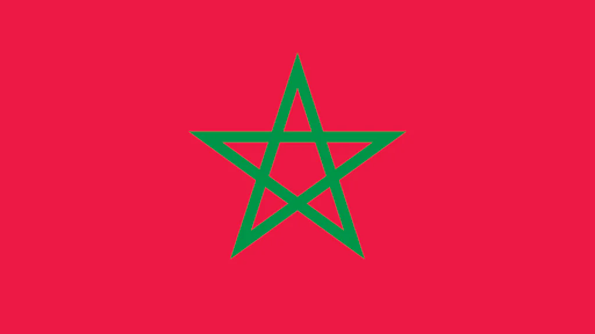
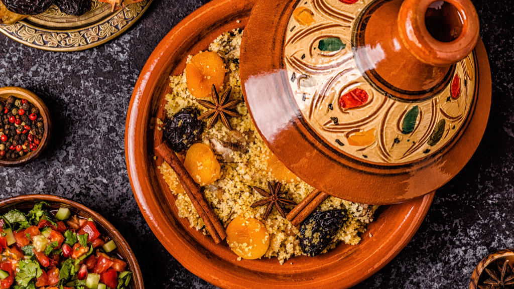
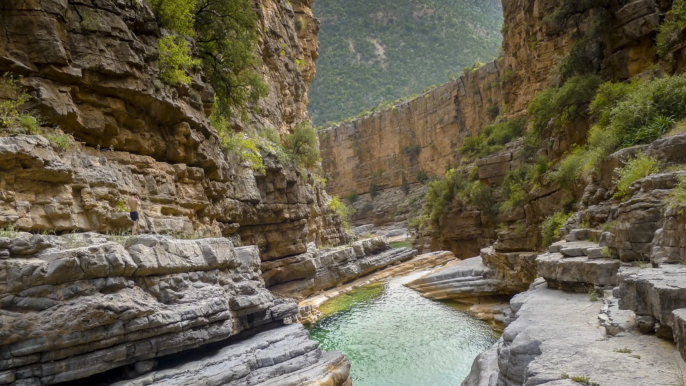

Odkrywamy Maroko


"Kto raz ujrzał to białe miasto", będzie po nim płakał, gdy będzie już daleko, to słowa mieszkańców Tangeru. W całym Maroku na turystów czekają niezapomniane wrażenia i niezwykłe przeżycia. To kraj odznaczający się wielką różnorodnością geograficzną, historczyną i kulturową, rzadko spotykaną w innych rejonach świata. Marokańskie krajobrazy to z jednej strony ośnieżone pasma górskie i pustynne pejzaże, a z drugiej rozległe zielone równiny oraz ciągnące się kilometrami plaże.
Informacje ogólne

Maroko jest oddalone jedynie o 14 kilometrów od Hiszpańskiego lądu. Oddzielone od niego Cieśniną Giblartarską, leży u wrót Afryki. Gościom przybywającym promem z Hiszpani już z daleka ukazuje się lśniąca w słońcu sylwetka mediny Tangeru - morze białych budynków, malowiczo ściśniętych na skalistym wzgórzu stromo opadającym ku morzu.
Lokalne speciały
W kuchni Marokańskiej są dania sycące, są też wyrafinowane, niektóre są proste. Wśród potraw znaleźć można kozią głowę z dodatkiem soli i kuminu. Grilowane mieczniki, briouats - pierożki z serem i ważywami, brochtte - szaszłyki z jagnięciny, Harrira - zupa podawana po zachodzie słońca, Tażin - baranina, ryba, lub wołowina z dodatkiem warzyw, Mechoui - jagnię pieczone w glinianym piecu Baghrir - naleśniki z miodem, z migdałami i olejem arganowym.

Asmi, Imlil, Ourika

Najwyższe góry Afryki Północnej są rajem dla miłośników przyrody, kultury Berberyjskiej i trekkingu u podnóży tych gór leżą trzy wyjątkowe doliny, które przyciągają podróżników z całego świata. Dolina Asmi jest idealna na początek przygody z Atlasem. Słynie z gajów oliwnych, migdałowych i jabłoni. Imlil to najpopularniejsza baza wypadowa na Jabal Toubkal i trekking po Wysokim Atlasie. Ourica - oaza zieleni i wodospadów.
Essaouira
Nazywana jest perłą Atlantyku, miastem wiatrów i artystów, w którym szum morskich fal miesza się z dźwiękami muzyki gnawa, historia miesza się z teraźniejszością, a ruch turystyczny z bogatymi tradycjami mieszkańców. błękitne łodzie, dźwięki muzyki gnawa, zapach oceanu i świerzych ryb, bielmurów, błękit okiennic - to tylko niektore uroki Marokańskiego miasta.
Tańczące wody w zielonej oazie Maroka
Wodospad Ouzou zapiera dech w piersiach, gdyż jest to najpięknieszy wodospad w Afryce Północnej. Jest to 110-metrowa kaskada wodospadów. Woda z hukiem spada do głębokiego wąwozu rzeki El-Abid, tworząc malowniczą chmurę mgiełek i tęcz. Nazwa wodospadu wywodzi się z języka Berberyjskiego i oznacza "ziarno mielone w młynie", jest to nawiązanie do tradycyjnych wodnych młynów, które do dziś działają w okolicy, napędzane siłą spadającej wody.